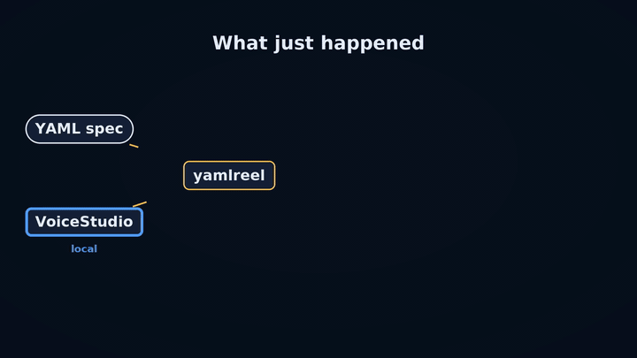
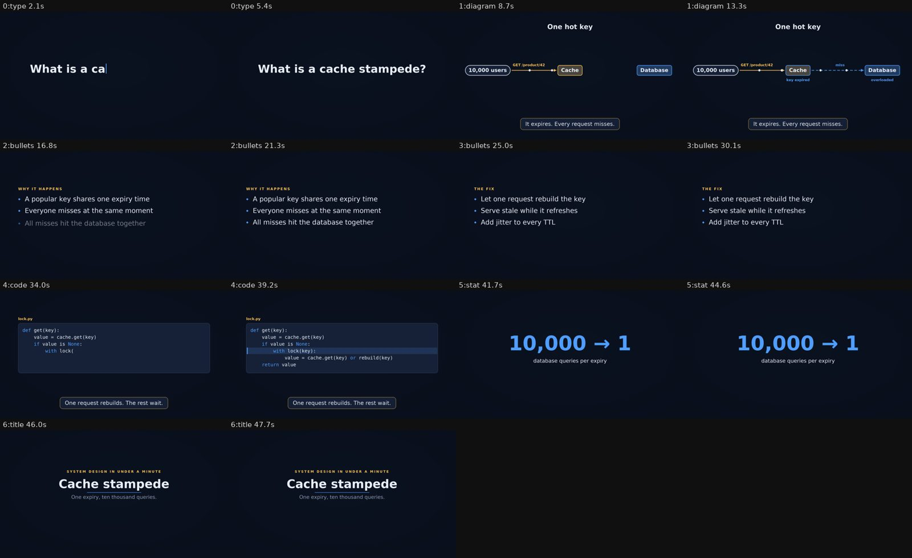

yamlreel
Write a short YAML file. Get a finished video.
An open-source project by Nitin Sijwali (@nsijwali)

yamlreel turns a YAML file into a finished video: system-design explainers, code tips, project launches and feature demos for YouTube Shorts, YouTube and LinkedIn. It draws animated diagrams and typed code, generates original background music, and adds an optional voiceover in your own cloned voice, all on your own machine.
Install
pip install "yamlreel[ffmpeg]"
yamlreel init system-design my-video.yaml
yamlreel render my-video.yaml --previewWhat you get from one file
- A vertical cut for Shorts and a landscape cut for YouTube or LinkedIn
- A thumbnail and a contact sheet to review before you post
- A ready-to-paste title, description and hashtags
- Narration in your own voice through a local text-to-speech server such as VoiceStudio; nothing is sent to the cloud
A video is a list of scenes
theme: midnight
formats: [vertical, landscape]
scenes:
- type: type
text: What is a cache stampede?
narration: Ever seen one expired cache key take down a whole database?
- type: bullets
title: The fix
items: [Let one request rebuild the key, Serve stale while it refreshes, Add jitter to every TTL]
- type: stat
value: "10,000 → 1"
label: database queries per expiry